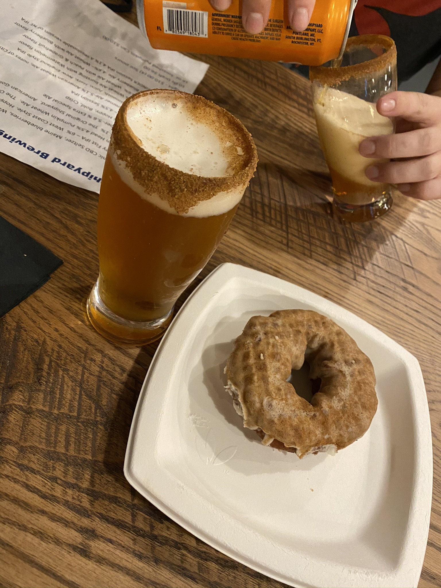
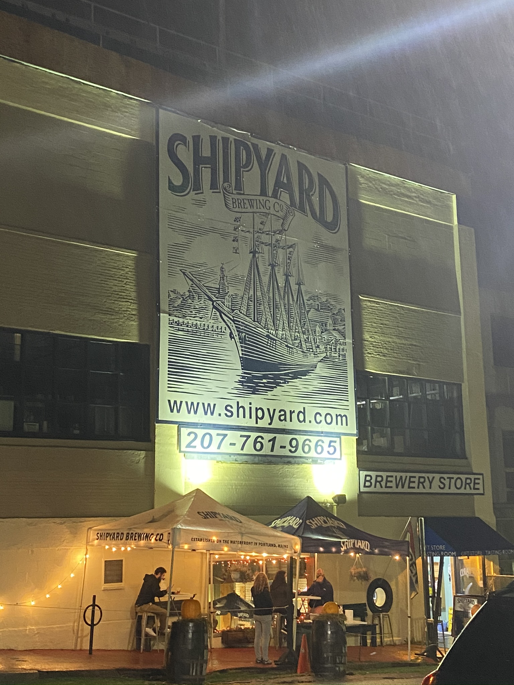
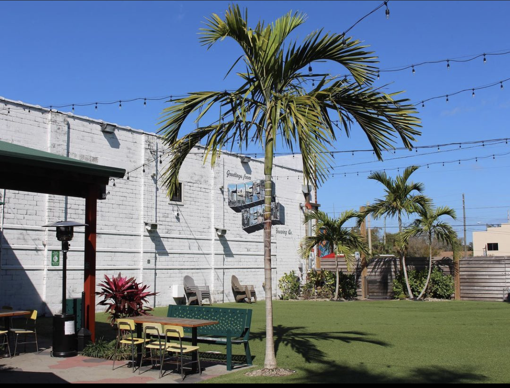
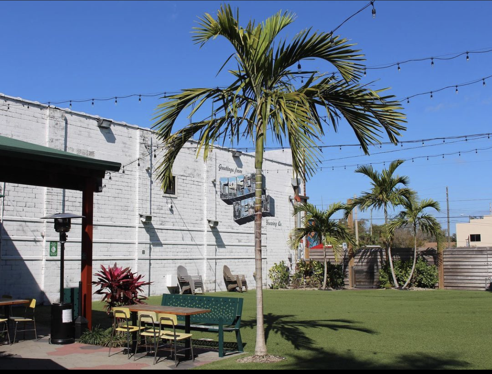

My fiancee and I traveled to Maine back in October. During our 10 day stay, it quickly became one our favorite states to visit! We spent a few days in Portland and the food and drink scene was amazing. Two places in particular stick out in my head, Shipyard Brewery and Duckfat. Shipyard is known for their pumpkin beer and in Portland they add a twist. When you go inside the brewery they serve the pumpkin ale in a pint glass with cinnamon and sugar around the lip served with a sweat potato glazed donut. DUCKFAT was a restaurant that cooked everything in duck fat. The fries and the short-rib panini were some of the best things I have ever tasted!
 One of the reasons we moved to St. Pete was the craft beer scene. One place I love to go to on the weekends is Green Bench Brewery. They have an awesome outdoor area with a projector that plays movies on certain days (outside of COVID). If you go, I would recommend the Postcard Pilsner, it's the perfect "dad beer".
 

I would consider myself a "foodie" in the eyes of an average person. Recently, I tried a Venezuelan restaurant in St. Pete called, 11 Chicks Yummy Creations. They're known for their Arepa's and I haven't had a bad one to date!

I've been playing video games since I was 8 or 9 years old. I've only had Sony systems and I don't think I will every change that unless I built my own computer. But, the main reason I play these days to reconnect with friends from out of state and to blow off some steam. If for some reason you would like to purchase a PS5 you can click on one of the pictures below to take you to the Playstation store.

George is a 5 year old chocolate Cockapoo. To say that my fiancee and I are obsessed with him is an understatement. He brings immense joy to my life and I try to do the same to his whenever I get the chance. He loves going to Fort De Soto dog beach and chasing bird shadows. He also enjoys digging in the sand and sitting in the shallow parts of the ocean. A fun fact about George is that he absolutely hates puppies! One day I might have to take him into SDG and let George meet everyone.